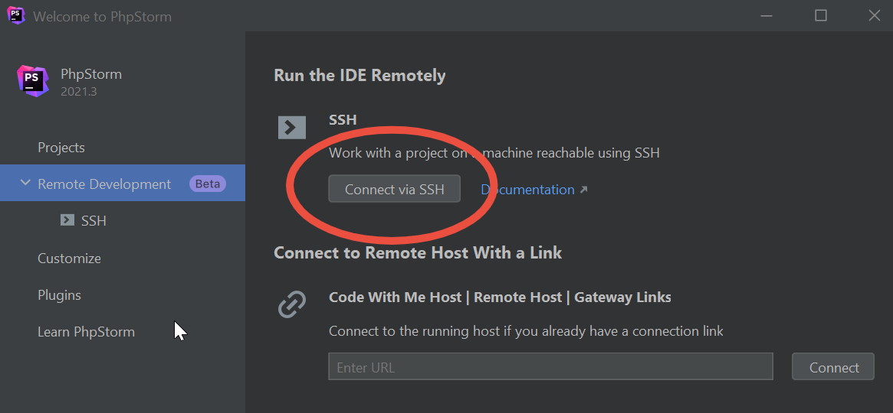
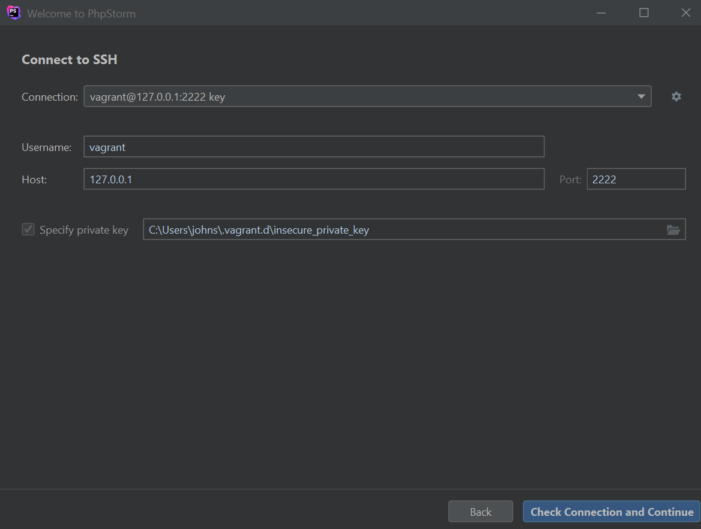
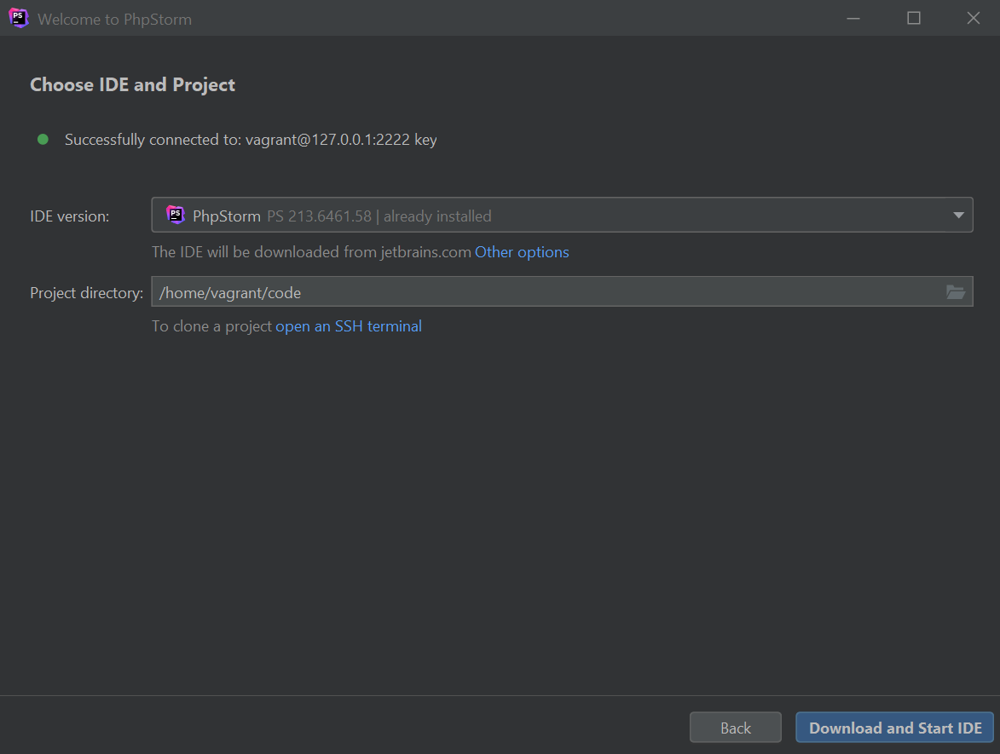

It’s the end of 2021, and we can finally port our development environments. You might be thinking, “just use docker” right? That’s part of the solution, but the missing piece for a while has been a way to run the development environment directly along-side the application so that you can have a seamless experience when debugging.
You’ve been able to do this for some time using VSCode, via it’s Remote Development feature. Recently Jetbrains announced similar functionality. Let’s see what this feature can do!
I want to be able to develop on Linux, Mac, or Windows, so I’ll need a workflow that works for all of those.
The project im testing this with I started development on my Linux machine about a year ago.
- PHP 7.4
- Symfony 5
- MySQL
- Nginx
- xDebug
- PHPUnit
- NPM & Webpack Dev Server
- React
In order to support another developer I switched the project over to Homestead. I chose Homestead over Docker containers mainly because Homestead comes pre-baked with all the dependencies I need, and it was easy to set up.
The only interesting part of the Homestead.yaml is the folders section which I optimized for filesystem performance reasons. I’m only allowing syncing of files which I intend to commit since all other operations will happen within the VM.
folders:
-
map: ./
to: /home/vagrant/code
type: "rsync"
options:
:type: "rsync"
:rsync__exclude: [
".git/",
"vendor/",
"node_modules/",
"var/",
"public/build/",
"public/uploads/"
]
Running the Development Environment
First we run vagrant like normal. vagrant up
Then we set up the IDE. This is a little different from what we’re used to in PHPStorm.



⚠ When I first started running this I had to increase the resources available. A minimum of 4G is recommended for memory. I increased my Homestead.yaml to have
memory: 4096andcpus: 4which works well for my application.
Once started we can use the IDE pretty much like normal except it’s running INSIDE the VM. This means everything we see is “local” to the VM where the IDE is also running. The editor you see is just a dumb pane of glass.
Some advantages come from this. The most obvious is that the PHP interpreter is local, so you don’t have to create a new tunnel when debugging. This makes everything a little faster. The other obvious advantage I’ve found is that dependencies are “real”. What I mean by this is the files you see in the IDE are the ones being used by the project, and they don’t have to be synchronized to the host machine. This results in more accurate and more performant analysis by the IDE since there’s no file synchronization needed for large directories like the node_modules and vendor folders. It also prevents weird behavior between Vagrant host machines. For instance, the node_modules folder often causes bugs on Windows machines due to directory depth. That’s no longer a potential problem.
You also run the npm dev server within the VM, everyone uses the same npm version from the VM and setup of Javascript debugging is easier too since it’s running locally too.
This feature is still in “Beta” but I’m really liking what im seeing here. So far it feels really polished and solves a huge gap in functionality for the fullstack multi-platform development that I like to do. The thing I like most about this particular solution is that it all can run locally. Sure, you can also connect it to a cloud provider, but I like having the option to run everything without an internet connection.